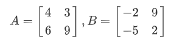
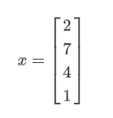
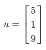
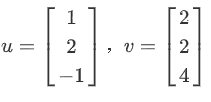

第 11 题
给定下面两个矩阵 A 和 B。

A−B 的结果是什么？以下每对方括号按第一行、第二行列出。查看答案与解析
答案 D
按位置相减：4−(−2)=6，3−9=−6，6−(−5)=11，9−2=7。结果第一行 (6, −6)，第二行 (11, 7)，对应 D。
有 2 位学生、每人有 3 项成绩，再给每项成绩一个权重。怎样一眼看出最后应该得到几个总分？先把数据排好，再检查行数和列数。
矩阵就是按行和列排成的数字表。2×3 表示 2 行、3 列。只有一列的是列向量，只有一行的是行向量。形状中的第一个数永远是行数。
两个矩阵形状相同就能逐位置加减。比如第一行第一列是 4 和 −2，相减是 4−(−2)=6。
一个普通数字叫标量。数乘就是每个元素都乘这个数字，形状保持原样。转置把行和列互换，记作 Aᵀ，2×3 变成 3×2。
A 有 m 行 n 列，B 有 n 行 p 列，写成 (m×n)(n×p) → m×p。中间的两个 n 相同才可以乘，外侧的 m 和 p 是结果的形状。
第 i 行、第 j 列的结果，是 A 的第 i 行和 B 的第 j 列逐项相乘后加起来。这个「对应相乘再相加」的运算就是内积。两个 n×1 列向量 u、v 的内积写作 uᵀv，结果是一个数。AB 和 BA 的形状、甚至能否相乘，都可能不同。
A 是 3×2，B 是 2×4。AB 的形状是什么？BA 能算吗？
AB 的中间维数是 2，结果为 3×4。BA 中间维数是 4 和 3，对不上，所以不能乘。
先独立作答，再展开解析核对。计算题可以在纸上列式。
给定下面两个矩阵 A 和 B。

A−B 的结果是什么？以下每对方括号按第一行、第二行列出。答案 D
按位置相减：4−(−2)=6，3−9=−6，6−(−5)=11，9−2=7。结果第一行 (6, −6)，第二行 (11, 7)，对应 D。
给定下图中的列向量 x。

(1/2) × x 等于什么？给定下图中的三维列向量 u。

求 u 的转置 uᵀ。给定下图中的两个三维列向量 u、v。

内积 uᵀv 等于多少？令A和B是3x₃矩阵，以下哪一项一定是正确的（选出所有正确项）
答案 A、B
A 的对应元素相加可以交换顺序。B 中 (3×3)(3×3)(3×1) 得到 3×1。C 可用 A=I、B=2I 反证：两边分别是 2I、4I。D 的乘积维度是 3×3。
加减要求同形状。转置交换行列。矩阵乘法检查中间维数，结果取外侧维数。